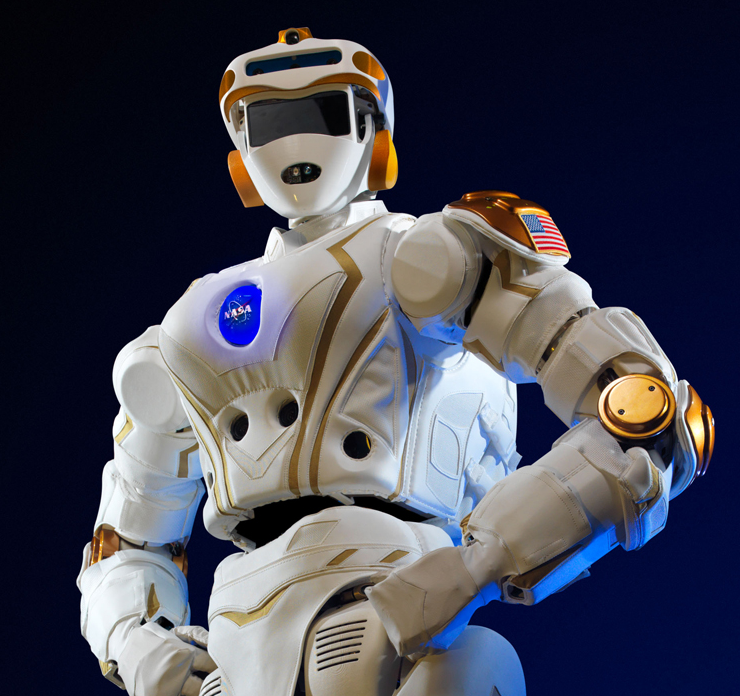

RECAP: Can AI be a member of your project team?
There are many types of AI from simple environment sensors to autonomous vehicles and to humanoid robots
The USA DoD and others are considering ethical treatment of AI
As Project Managers, we are already managing many types of AI. We can add guidance to PMBOK to share our best practices with other project managers
Humans and AI are boldly going to infinity and beyond...

Learn more by reading
The Age of Living Machines: How Biology Will Build the Next Technology Revolution
by Susan Hockfield, MIT
5 Biggest Project Management Trends
How Businesses are using Machine Learning and AI
40 Amazing Artificial Intelligence Facts Worth Tweeting About
The Potential Legal Issues of AI (And Why You Should Care)